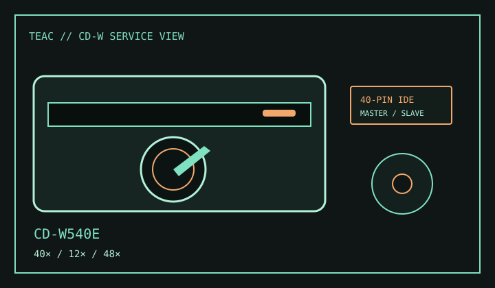

[ CD-R AND CD-RW DRIVES // IDENTIFIED MODEL ]
TEAC CD-W540E
Internal E-IDE/ATAPI CD writer supporting up to 40× CD-R, 12× CD-RW and 48× CD read.

IDENTIFICATION: Verify the CD-W540E suffix against the drive label and service literature; related TEAC writers are not interchangeable for firmware or jumper setup.
Documented specifications
| Exact model | TEAC CD-W540E |
|---|---|
| CD-R write | Up to 40× |
| CD-RW rewrite | Up to 12× |
| CD read | Up to 48× (maximum varies by disc and read mode) |
| Supported media | Writes CD-R and CD-RW; reads CD-ROM, CD-DA, CD-ROM XA and supported mixed-mode/recordable CD formats. Check software for multisession or specialized disc access. |
| Interface / bay | Internal 40-pin IDE/ATAPI, half-height 5.25-inch bay. |
| Host compatibility | Use an ATAPI-compatible IDE channel, supported DMA mode and software that recognizes the CD-W540E. Host OS and application support are dependent on the supplied driver/software generation. |
| Firmware / jumper | Keep the CD-W540E firmware revision and OEM identity with the unit record. Set Master, Slave or Cable Select only as diagrammed in the exact manual/service document and consistent with other devices on the channel. |
Compatibility and preservation
- Rated speed depends on disc quality, recording mode and authoring software; verify the recorded image after writing.
- Record firmware, host/IDE channel, jumper configuration, media identity and errors.
- Do not apply firmware from another CD-W model or assume an interface bridge preserves period writing features.
Manufacturer and manual references
- TEAC CD-W540E user manualModel-specific installation, specifications and jumper configuration reference.
- TEAC CD-W540E service manual archiveService documentation for the exact drive model; verify revision against the label.